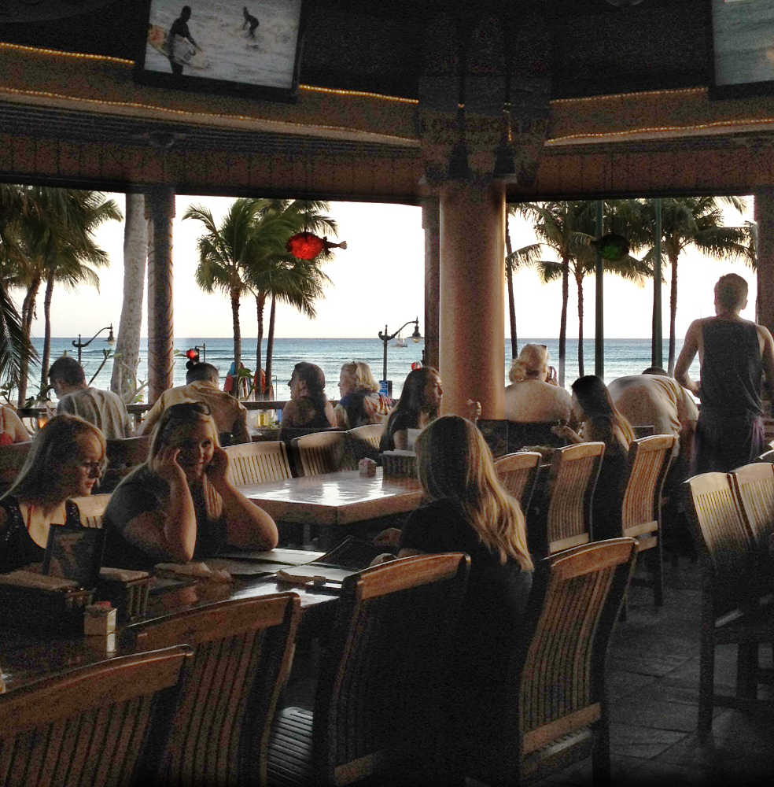
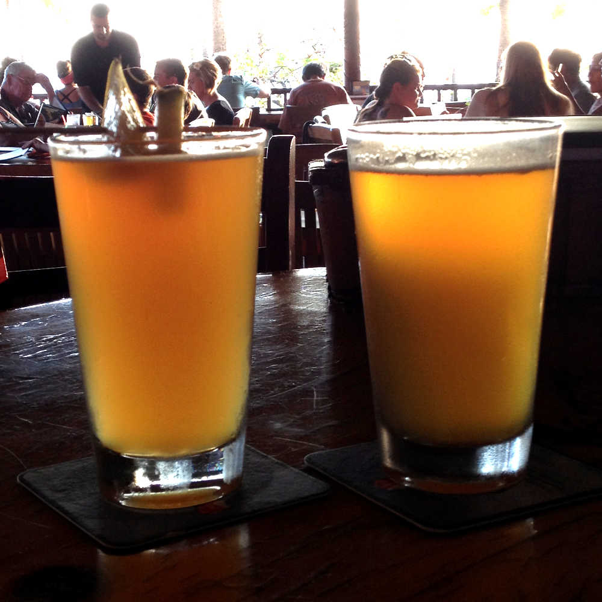

a perfect sunset
Lulu's in Waikiki

Located across the street on the corner of Kalakaua and Kapahulu, Lulu's is just upstairs from Starbucks. It is a casual restaurant with a good selection of craft beer and great pub food. You'll see bikers, tourists, and everything in between here. A big draw is the spectacular sunsets.

people watching
Kapiolani Beach

Grab a book or magazine and head to Queen Kapiolani beach. Out on the pier, you'll see drone pilots and kids doing cannon balls. If you're lucky, you'll get to dance with the Hare Krishnas. It's a fun place to sit and people-watch.
and here is some more
The nachos!

You can't go wrong with the nachos (tip: the full order is HUGE even for two people). If you're feeling the urge to go all out on dinner, the Magnum P.I. Burger is hunk (of beef). For something lighter, you can't go wrong with their Caesar Salad (the croutons are pretty good).
music and comedy
The Republik

This small venue is a great place to see up and coming comics or bands. Must more intimate than the Blaizedale. Reasonable drink prices with good food. Mints provided in the bathroom.
music and comedy
The Republik

Meet the performers after for a picture and conservation.
sand and watercolor sky
Waikiki Beach

Take a strool along the sidewalk made of sand and smell the ocean. See people happy to be near the water.
what's that island
Rabbit Island
Urband legends galore. Either this island is full of rabbits or it looks like a rabbit. I've lived here fifteen youre and do not know and perptetuate total crap. But, the facts do not mattert. It's not about the facts. God fucking fuck, this keyboard I keep hitting the mouse pad. There is no place to rest my thumbs.
it's rainng, it's pouring
See a Movie!

If the weather is crappy head to the Dole Cannery and see a movie. This is a picture from the parking lot. The theaters at Dole Cannery are much better than Ward Consolidated. Less crowded and comfortable seating.
another pic
Dole Cannery
It almost looks like a cold winter in Detroit. But no, it's a sunset near Perl Harbor.
one-thousand steps
Koko Head Hike

Over a thousand steps to the top. It's steep, there's a bridge, and watch out for bees. Good luck. Well worth it though for the views of eastern and southern Oahu.
looking down
Koko Head Hike
Over a thousand steps to the top. It's steep, there's a bridge, and watch out for bees. Good luck. Well worth it though for the views of eastern and southern Oahu.
more info
Contact and Social
Unlike anytime, anyday hasn't made its way into the dictionaries. Argument could be made that if anytime is an adverb, then so is anyday. Like all informal slang, it's up to personal preference. All picture were taken with cellphone cameras.
If you have any questions or comments, email: anydayhawaii@gmail.com. Also, check us out on instagram: http://instagram/anydayhawaii.com


Thanks Much!
EF and MC